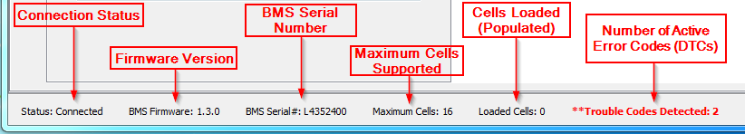

This screen is used to change the various different settings that make up a Battery Profile. For more details on setting up a profile, please see: Creating a Profile.

Above is a description of each value displayed on the utility toolbar.
| < Profile Setup Wizard | Live Text Data > |